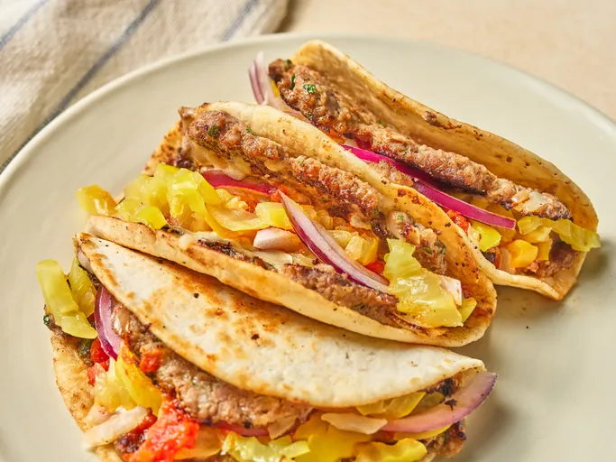

Smashed Meatball Sub Tacos
Home

Description
These meatball sub smashed tacos, made with a quick homemade meatball, work so perfectly
every time because of the ratio of meat to tortilla to toppings—it's unmatched.
Ingredients
- 1 large egg
- 1 large egg yolk
- 1/3 cup grated Parmesan cheese
- 1/4 cup milk
- 1/4 cup finely chopped onion
- 2 tablespoons finely chopped parsley
- 1 pound ground beef
- 1 teaspoon kosher salt
- 1/2 teaspoon freshly ground black pepper
- 1/2 teaspoon garlic powder
- 1/4 cup Italian breadcrumbs
- 2 tablespoons olive oil
- 12 (4 inch) flour tortillas
- 3/4 cup marinara sauce
- 1 1/2 cups shredded mozzarella cheese
- thinly sliced red onion and sliced banana peppers for topping
Steps
- Combine egg, egg yolk, Parmesan cheese, milk, onion, and parsley in a bowl and whisk
well with a fork to combine. Add meat and season with salt, pepper, and garlic powder.
Mix until just combined and add breadcrumbs. Mix once more until well combined.
- Roll meat mixture into 12 meatballs.
- Heat a large nonstick skillet or griddle to medium-high heat. Working in batches, drizzle
about 1/3 of the olive oil over the skillet. Place a meatball in the hot skillet and place
tortilla on top. Using a spatula, carefully smash tortilla down over meatball, slightly
spreading meat until it reaches the edges of the tortilla in an even layer. Repeat with
as many meatballs and tortillas that will fit in the skillet or on the griddle.
- Cook, undisturbed, about 3 to 4 minutes or until browned and cooked through.
Flip tortillas and top with 1 tablespoon marinara and 2 tablespoons cheese.
Cook 1 minute, then top with onions and banana peppers. Fold into a taco shape and serve.